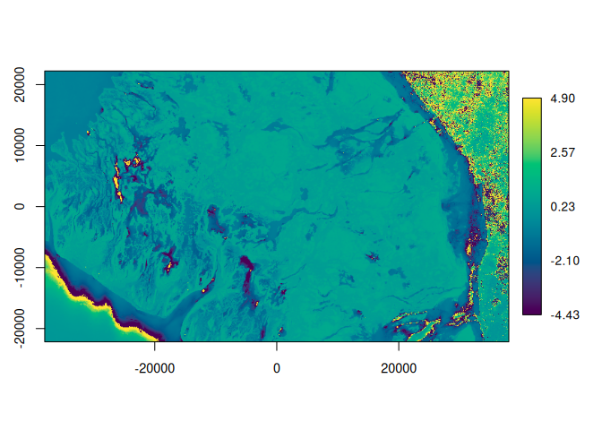
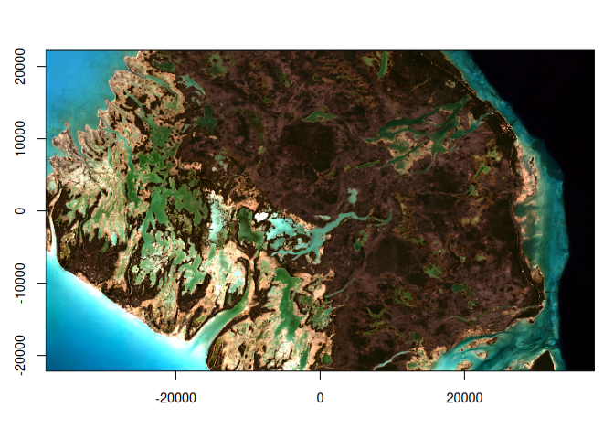

[!WARNING] garry is experimental and under active development. The API changes without deprecation: function signatures and behaviour may differ between commits, and nothing here should be treated as stable yet. Development and benchmarking happen on Linux; macOS is CI-tested but less exercised, and there is a known issue with the fused execution path on Apple Silicon. Performance and behaviour there are not yet fully characterised.
garry is a lazy, spatial-aware raster engine for R. You describe a whole raster computation as a graph and it runs it fast: chunked, distributed across processes, with the numeric kernels JIT-compiled to XLA (CPU or GPU).
What it is:
-
Lazy. Every operation (
lazy_map(),focal(),reduce_over(),mask(),align()) adds a node to a computation graph and returns immediately. Nothing reads or computes untilcollect(). - Spatial-aware. Arrays carry their CRS, transform and extent. Alignment is explicit: binary ops never silently resample, so a pixel is never quietly moved half a cell.
-
Fast.
collect()plans the graph into chunks, streams reads through a GDAL daemon pool, and runs the fused kernels through anvl (XLA). On a three-band annual HLS composite it matches Python’s ODC + dask on the same machine, in idiomatic R. - GDAL-faithful. IO is gdalraster.
Scope
garry is a raster-algebra compiler, not a GIS. It provides a small, closed set of array primitives (elementwise map, focal stencils, reductions, scans along time, whole-window model kernels; fixed-point iteration is planned) over grid-pinned labelled cubes. Expressions are written in anvl’s vocabulary, planned as one graph, and executed distributed and memory-bounded. This closed world is what makes whole-graph fusion, cost placement and byte-identical distributed execution possible.
On those primitives garry ships a growing catalogue of statistical verbs: geomedian() and medoid() for multivariate compositing, kalman_smooth() and hampel_smooth() for time series, ocm_mask() for learned cloud masking. Each is an ordinary composition in the same public vocabulary available to every user (a reducer body, a scan body, a focal or model kernel) with no privileged access to the engine, so anything garry ships, a script or downstream package can equally write. A verb earns its place by being useful across earth-observation pipelines and verifiable against a reference implementation; domain-specific analysis belongs downstream. When something genuinely cannot be expressed, that is the signal for a deliberate, rare extension of the primitive set, which is exactly how scans, band-time cubes, and model kernels arrived.
GDAL is the only boundary. The warper is the universal ingest and reshape mechanism (reprojection, resolution change, mosaicking); materialisation is the exit. Vector interop, dynamic-shape outputs and format conversion belong to GDAL at that boundary, not to the engine.
Installation
You can install the development version of garry from GitHub with:
# install.packages("pak")
pak::pak("belian-earth/garry")Example
A cloud-masked annual median composite of HLS Sentinel-2 imagery, straight from the Microsoft Planetary Computer. The whole pipeline is lazy: it reads and computes only at the final collect().
library(garry)
#> garry: GDAL 3.13.0 "Iowa City", released 2026/05/04
# 1. Discover: HLS S30 over an AOI, all of 2023, pre-signed for the PC.
aoi <- c(-78.4, 24.4, -77.65, 24.8) # lon/lat bounding box
src <- stac_query(
bbox = aoi,
stac_source = "https://planetarycomputer.microsoft.com/api/stac/v1/",
collection = "hls2-s30",
start_date = "2023-01-01",
end_date = "2023-12-31"
) |>
stac_sign_mpc() |>
stac_filter_cloud(30) |>
stac_filter_assets(c("B04", "B03", "B02", "B08", "Fmask"))
# 2. The analysis grid, straight from the AOI: an equal-area (LAEA) grid at 30 m
# centred on the bbox. No hand-picked EPSG or projected extent.
target <- grid_from_bbox(aoi, res = 30)
# 3. A read/compute daemon pool, auto-sized to the machine.
garry_daemons()
# 4. Build the pipeline. A `LazyDataset` holds every band over time; the verbs
# apply across all bands at once. Still nothing has been read or computed.
composite <- lazy_dataset(
src,
grid = target,
assets = c("B04", "B03", "B02", "B08"),
mask_asset = "Fmask",
nodata = c(B04 = -9999, B03 = -9999, B02 = -9999, B08 = -9999, Fmask = 255),
scale = TRUE, # apply each file's TIFF scale/offset tags on read -> reflectance
resampling = "bilinear"
) |>
mask(where = qa_bits(0:3), open = 2, dilate = 3) |> # clouds/shadows + cleanup
reduce_over("median", over = "t") # per-band temporal median
# A derived band is just more graph: NDVI from the NIR/red composites. It joins
# the lazy pipeline like any other band, computed only at the final collect().
composite[["ndvi"]] <- (composite[["B08"]] - composite[["B04"]]) /
(composite[["B08"]] + composite[["B04"]])
# Inspect the pipeline before running anything. print() summarises the dataset
# (bands + grid); draw() renders the IR: a LazyDataset as its ordered pipeline
# steps, a single band as its node tree.
print(composite)
#> ── <LazyDataset> ───────────────────────────────────────────────────────────────
#> bands B04 B03 B02 B08 ndvi
#> time 44 slices
#> grid 2536 x 1480 • f32
#> crs Lambert Azimuthal Equal Area
#> graph 583 nodes • lazy
#> ℹ draw(x) to see the pipeline
draw(composite) # the dataset's pipeline steps
#> ── <LazyDataset> pipeline ──────────────────────────────────────────────────────
#> ◈ source B04 B03 B02 B08 ndvi • 44 slices • 2536×1480 f32
#> ✕ mask from Fmask • bits 0–3 • open 2 • dilate 3
#> ▸ reduce median over t
#> ⊕ derive ndvi
#> ─ 583 nodes • crs Lambert Azimuthal Equal Area
draw(composite[["ndvi"]]) # the NDVI band's node tree
#> ── <LazyRaster> 2536 x 1480 • f32 ──────────────────────────────────────────────
#> ƒ map (2 inputs)
#> └─ ƒ map (2 inputs) ×2
#> └─ ▸ median over t ×2
#> └─ ⬚ stack along t
#> └─ ƒ map (2 inputs) ×44
#> ├─ ◈ source 2536×1480 f32
#> └─ ◫ focal r=3
#> └─ ◫ focal r=2
#> └─ ◫ focal r=2
#> └─ ƒ map
#> └─ ◈ source 2536×1480 f32
# preview() estimates a coarse grid from the graph and device, runs the pipeline
# at that reduced resolution (reading only overviews / the windows it needs), and
# plots the result -- a cheap look before committing to the full collect().
preview(composite[["ndvi"]]) # single band -> colour ramp + colourbar
# 5. Execute across the daemons. collect() returns a (y, x, band) array carrying
# a `gis` attribute (extent/CRS), so the result is self-describing.
a <- collect(composite)
# preview() on a materialised array reads that `gis` attribute for real-world axes.
preview(a) # multi-band -> RGB (first three bands)
To write to disk instead, write_tif() runs the same plan but streams each chunk into a GeoTIFF as it lands, so nothing is ever held whole in memory. dtype and scale quantise the f32 reflectance back to int16 (half the file size, and the scale is written to the TIFF tags so readers recover real values); cog = TRUE finalises a Cloud-Optimised GeoTIFF.
tif <- file.path(tempdir(), "composite.tif")
write_tif(composite, tif,
dtype = "i16", scale = 0.0001, nodata = -32768, cog = TRUE)The same verbs work on a single raster. lazy_source() opens one COG or a GDAL mosaic; lazy_map() / focal() / reduce_over() build map-algebra graphs; align() reprojects onto a target grid; collect() brings the result into R and write_tif() streams it to disk. See benchmarks/compare.sh for the back-to-back garry-vs-ODC benchmark.